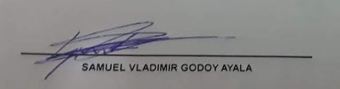

Hola preciosa, ¿cómo estás? De corazón espero que estés muy bien.... Hace tanto que no sé de vos, y probablemente así es como las cosas deben ser. Sin embargo...
"En el baul de los recuerdos donde guardo las cosas que no se olvidan, ahi estas tu mi vida". El motivo de la presente es porque quiero darte un mensaje y hago uso de Stitch (si es que viste el QR si no, se me complico lo siento) cuando me dijiste en mi cumple que, si un día quería volver a vos, pensara en él y lo que vivimos esa noche (por cierto, para mí la noche más linda del mundo) y lo hiciera. Así que "Heme aquí". Creo que la mejor manera de empezar esto es diciéndote que te amo. Realmente no ha habido un solo día desde que me fui en el que no haya pensado en vos. Literal hay días en los que termino cansado de tanto pensarte… de recordarte: quién fuiste, quién fui, quiénes fuimos y quiénes somos ahora.
Te quiero agradecer por los buenos momentos y por haber estado conmigo tantos años, agradecerte por la relación tan hermosa que me diste, ya que nunca me dejaste hacerlo cuando partí.
No obstante, ahora más que nunca quiero darte las gracias por dejarme ir... realmente necesitaba perderte para encontrarme. Necesitaba ese sufrimiento para crecer. Me llevó mucho tiempo, pero ahora después de darme de frente con la vida puedo decir de que aunque las cosas no son perfectas soy feliz con lo que tengo y lo que soy mientras soy paciente y trabajo en lo que quiero ser. He cometido errores, ganado y perdido; he nivelado mis estudios, trabajo, gimnasio, familia, amigos, incluso mi área más espiritual. Dios me ha permitido viajar, conocer lugares increíbles, asistir a eventos con los que antes solo había soñado vivirlos, y tener cosas que jamás imaginé. A veces, las decisiones correctas son tristes.
Ahora estoy siendo la mejor persona que sé que puedo ser y me encamino a ser la mejor persona que sé que puedo llegar a ser. Sin embargo, siempre me haces falta vos, y es irónico, porque leí algo que ejemplifica cómo me siento generalmente: Resco, V. (2024). "Qué injusto para este paraíso que me lo da todo, vivir opacado por lo felices que fuimos juntos cuando no tenía nada".
Y es extraño, porque yo me fui y te quedaste, pasaste página, no queres saber de mí y lo entiendo. Pero qué doloroso saber que yo no puedo seguir adelante, ya que camino y tropiezo en una esquina cualquiera porque escucho TU RISA, Y VOLTEO, Y TE BUSCO, Y TE ESPERO, Y TE NECESITO Y TE AMO. Solo para darme cuenta de que la llevo adentro, y que toda persona a la que le hable de vos no va a entender lo que fuimos en el corto tiempo que pudimos ser.
Para vos debe ser más fácil, con una ciudad entera a la que odiar cuando (y sí) te acordás de mí, mientras yo pienso en vos solo porque no puedo sacarme de encima la costumbre de llevarte conmigo.
.
No me queda más que hacerme cargo de que, si seguís en mi cabeza, el problema soy yo. Yo que te conocía como la palma de mi mano, y hoy no conozco nada a nadie. Y en mi pecho es invierno y tengo ese frío que empieza en los poros de mis huesos y termina allá, Del otro lado de tus cachetes con tu sonrisa cálida que me hacia sentir siempre en verano El problema SOY YO, que no hay paisaje perfecto si no estás vos, pero que no pude quedarme en la relación porque ahí solo estabas vos. “Y el mundo entero no puede reemplazarte, pero vos no podés reemplazar al mundo entero”.
Todo este tiempo he estado soltero y lo he disfrutado. En algún momento, quizás pensé quedarme así para siempre, pero analizando a dónde quiero conducir mi vida, entiendo que es un momento oportuno para empezar una relación. Y claro, podría darme la oportunidad de conocer a alguien con esa intención, pero el problema es que te llevo tatuada en el pecho. Traté de negar eso por mucho tiempo, pero vivir en negación ya no forma parte de mis planes, por lo que decido aceptar lo que realmente siento y decirte:
Lo siento, de verdad lo siento. Por todo, por haberme ido. Lamento no haber tenido el valor antes... Han sido dos años difíciles. Debí buscarte antes. Me costó mucho aceptar mis errores y mis sentimientos hacia todo lo que fuimos.
Ojalá realmente puedas leer esto (a veces lo dudo). Ahora lo entiendo. ¿Te acuerdas cuando dije que quería estar solo para estar completo? No puedo imaginarme nada peor ahora, solo quiero ir a casa (a ti). Cuando nos conocimos, me sentí a salvo por primera vez en mi vida, y ahora no puedo, de ninguna manera, entender por qué siempre te dejaba atrás cuando tú eres lo único que me importa. Te esforzaste por conocerme, perdóname por no haber hecho el esfuerzo de conocerte. Estabas ahí, frente a mí, y yo no te vi. He vivido una vida por las razones equivocadas.
Y yo entiendo que probablemente rehiciste tu vida. Desconozco si tendrás pareja actualmente o si estás conociendo a alguien, y eso debería alegrarme, ya que si tú eres feliz, yo soy feliz. Pero, siendo honesto, me rompe el corazón pensar que alguien más te dé todo lo que en su momento yo no pude o quizás no quise dar. Igual, no sé si simplemente te doy asco, o me odias y no querrás saber de mí, lo cual es entendible. Lo comprendo y no pasa nada. Te pido perdón por alterar tu status quo y te prometo que no se repetirá. Solo te pido que me entiendas. "Toda declaración de amor es urgente porque vamos a morir" Jodorowsky, A. (s.f.). Y realmente prefiero morir sabiendo que te pedí perdón y te dije que te amaba, tragándome el orgullo, a no hacerlo.
No viviré tranquilo sin al menos saber que intenté volver a quien yo amo. Por lo que, si decís que no querés verme nunca más, estás en todo tu derecho. Créeme que te doy las gracias por todo lo que vivimos y te deseo que seas infinitamente feliz, que te llenes de éxito y encontrés la paz que yo creo que, en el fondo, todos buscamos. "Quiero que sepas que Te amo eternamente" y, claro, tengo mi vida y seguiré adelante, pero tené por seguro que siempre habrá un espacio en mi corazón para nuestra historia.
Lamento todo el daño que te hice dentro y fuera de la relación. Todo este tiempo me ha ayudado a mejorar como persona y entiendo todo lo que he hecho.
.
Te conocí a los 9 años; te volviste mi mejor amiga y la única razón por la que me gustaba ir al colegio. A los 10, te reencontré a los 15 y me gustaste por primera vez. Me enamoré de ti a los 16; a pesar de lo que pasó, te amé mientras te fuiste y cuando volviste. Te he amado por 7 años; yo nunca he amado a nadie más así. Esa clase de amor solo aparece cuando eres joven y tonto. No voy a tenerlo otra vez, y cuando le cuente a mis hijos la historia del gran amor de mi vida, quiero que tenga un final feliz.
Quizás el dejarte ir sea el final feliz… Pero, aunque es probable que lo nuestro ya no tenga salvación, debo hacer el intento.
Y creeme que me asusta pensar en lo que respondas o no respondas, me encantaria hacerme bolita y meterme en mi caparazon de desinteres (como siempre hice) donde nadie pueda hacerme daño, pero estoy pegado a vos. Y sabiendo que esta en riesgo verte o no verte nunca mas, Por primera vez en mucho tiempo sin importar lo que respondas creo...Creo que puedo hacerle frente
Como te digo, es casi una carta al aire. Entiendo que la posibilidad de volverte a ver es risible, pero si hubiera una pequeña esperanza de volver a conocernos, me encantaría enseñarte quién soy ahora.Por lo que me gustaria decirte:
Te espero sin peros y sin condiciones.
Te espero en la puerta.
Te espero con flores.
Te espero en mi casa, sodauva en la cocina.
Te espero esta noche o toda la vida.
Te espero a tu tiempo y yo no te apuro.
Te espero en las buenas.
Te espero en lo oscuro.
Te espero en la playa, atardecer en el mar
Donde te prometí que un día iba a volverte a buscar.
Te espero y juro que sigo esperando que vos, algún día, también me estés buscando.
Si no es así, lo entiendo. Lamento interrumpir tu vida y te prometo que no volverá a ocurrir, este es mi cierre si quieres hablar como te digo estare encantado si no me parece que finalmente te digo lo que siento y te dejo ir mi niña. En ese caso, aún tengo tu foto de graduación de prepa y podría dártela.
Lo digo porque sé que eso es importante para tu historia, además que: "Conservar algo que me ayude a recordarte sería admitir que puedo olvidarte".
Te deseo una dulce y feliz vida... mi vida.💛
.
"I'd like to think that our love's worth a tad more" (Guns N' Roses, 1991)."
